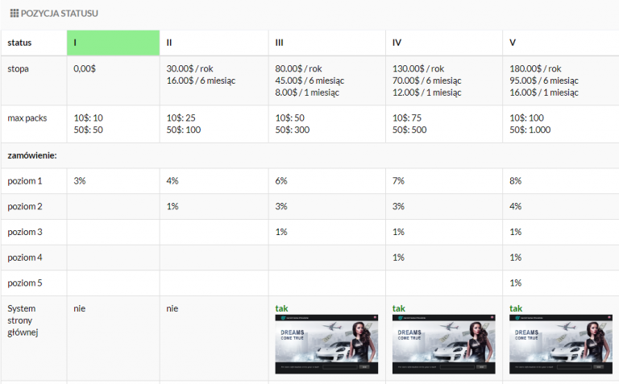
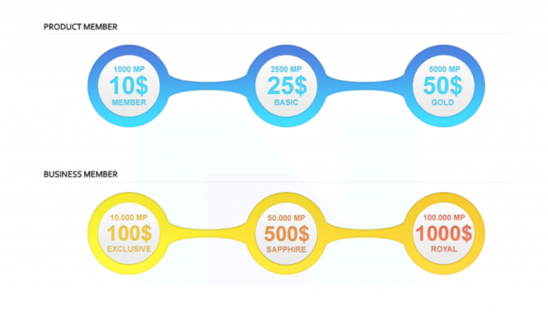
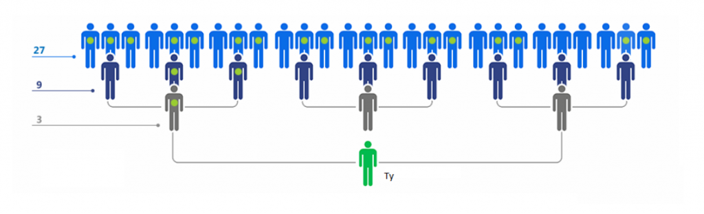
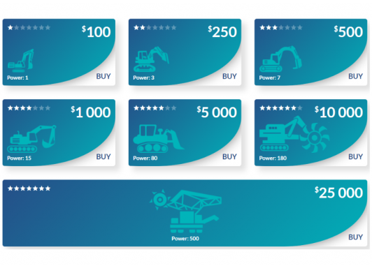

Jeśli już działasz ze mną i zarabiasz bez inwestycji to warto zastanowić się nad pomnażaniem swojego kapitału. I tu z pomocą przychodzą programy inwestycyjne w których sam działam i zdecydowanie mogę je polecać. Jednym z nich jest FutureNet.
FutureNet to pierwszy na świecie projekt, który wynagradza swoich użytkowników za aktywność na portalu. Czy znasz jakąś platformę społecznościową, która pozwala zarabiać dzięki oglądaniu reklam? Prawda jest taka, że w większości przypadków to my płacimy takim portalom – własną prywatnością, z której korzystają tylko reklamodawcy! Moim zadaniem jest pokazać Ci, w jaki sposób możesz to wykorzystać dla siebie, tak jak robi to już ponad 4 miliony osób.

FutureNet– to platforma społecznościowa tzw. revshare. Mamy w nim 4 możliwości pasywnego zarabiania. AdPacki, matryce, kryptowaluta FuturoCoin, BannersApp
- Rejestracja w FutreAdPro jest darmowa i do niczego nie zobowiązuje
- AdPacki – kupujesz tu paczki reklamowe, które dają Ci wyświetlenia Twojej strony internetowej. Firma dodatkowo dzieli się z użytkownikami zyskami z oglądania tych reklam. Można tutaj uzyskać 120% zysku w około 120 dni.
Czym jest FutureAdPro
To nic innego jak RevShare. Zakupując paczki reklamowe tzw. AdPacki, za które otrzymujemy wyświetlenia naszych biznesów czy stron www. Oglądając codziennie po 10 reklam innych użytkowników, firma dzieli się z nami zyskami w zależności od posiadanych przez nas rodzajów AdPack.
a) paczka 10$ – daje nam 160 wyświetleń naszej strony i zamyka się po około 150 dniach dając nam około 20% zysku, czyli około 0,8% dziennie
b) paczka 50$ – daje nam 800 wyświetleń i zamyka się po około 120 dniach dając nam około 20% zysku, czyli około 1% dziennie
Bonusy
- Będąc w moim zespole przy każdym zakupie 10 paczek za 50$, 1 paczkę dodatkowo dostajesz ode mnie GRATIS!
- Będąc w moim zespole przy każdym zakupie 20 paczek za 50$, 2 paczkę dodatkowo dostajesz ode mnie GRATIS!
- Będąc w moim zespole przy każdym zakupie 30 paczek za 50$, 3 paczkę dodatkowo dostajesz ode mnie GRATIS!
Jaką prowizję otrzymujemy za polecone osoby w platformie AdPro ?
Prowizja za osoby polecone jest uzależniona od posiadanego przez na statusu. Aby zdobyć wyższy poziom należy opłacić abonament miesięczny, na 1, 6 bądź 12 miesięcy. Od osób bezpośrednio zaproszonych zarabiamy od 3% do 8% prowizji z ich wypracowanych zysków z AdPack.
Zarabiamy maksymalnie do 5 poziomu wgłąb naszej struktury, co przedstawia poniższy schemat.
Jak zarabia FutureAdPro żeby się z nami dzielić?
Pomysłowość tego biznesu polega na tym, że wszystkie pieniądze wydane na paczki reklamowe się nam zwracają z nawiązką w postaci 20%. Aby do zwrotu doszło musimy codziennie zalogować się do firmy i obejrzeć 10 reklam po kilkanaście sekund każdą i to wszystko. Od tej pory po obejrzeniu reklam firma będzie dzielić się z Tobą zyskami przez najbliższe 24h.
Działa to tak, że oglądając codziennie 10 krótkich reklam robisz firmie świetnie statystyki reklamowe. Do tego codziennie musisz to robić i obejrzeć przez mniej więcej 5 minut te reklamy, aby napędzić swój biznes. FutureAdPro ma dzięki temu świetne statystyki i dużo reklamodawców się do nich zgłasza. A reklamodawcy muszą zapłacić za reklamy. Więc zadowolone są trzy strony: firma FutureAdPro, reklamodawcy i Ty, bo za prostą czynność masz zysk i reklamę. Pomysłowy model biznesowy – musisz przyznać.
Zarejestruj sięDrugą możliwością zarabiania większych pieniędzy w Futurenet są MATRYCE
W dużym uproszczeniu matryce są „drzewkiem” poleceń znajomych w którym dostajemy prowizje od każdej nowej osoby w strukturze. Dostajemy również Media Points czyli wewnętrzną walutę którą możemy płacić za takie rzeczy jak: przestrzeń dyskowa typu Cloud, Landing Page czy kilka innych usług. Matryce można nabyć na dwa sposoby: kupić ją z własnej kieszeni lub automatycznie z wypłat z FutureAdPro, czyli części opartej na AdPackach. 5% wypłat idzie na poczet matryc więc prędzej czy później każdy czynny użytkownik FutureAdPro będzie je miał.
Matryc mamy sześć. Od każdego nowego użytkownika w naszej strukturze mamy minimum 5%
Jak znajdują się ludzie w strukturze? Jeśli zaprosisz kogoś ze swojego linku referencyjnego znajdującego się w zakładce settings. Jest jeszcze druga możliwość czyli jeśli Twój sponsor lub osoba nad Tobą zaprosi nowego użytkownika może on ”spaść” pod ciebie w wyniku braku miejsc w jego drzewku. Zarabiamy tutaj aż do 10 poziomów. Na grafice widać tylko 3 poziomy dlatego że więcej by się nie zmieściło bez utraty jakości grafiki. Poziomów jest aż dziesięć. Każdy kolejny poziom to potęga liczby 3..
Trzecią możliwością zarabiania większych pieniędzy w Futurenet są paczki Futurocoina.
Każda paczka miningowa ma inną moc wydobywczą oznaczona jest za pomocą wyrażenia POWER. Zysk z kopania jest uzależniony od trudności wydobycia jak i kursu FuturoCoina. Zysk w ciągu pierwszych 3 miesięcy po wprowadzeniu opcji zakupu paczek miningowych wynosił 40% w 3 miesiące.
W dwóch podanych biznesach (Futuro Network i FutureAdPro) nie musisz polecać aby zarabiać ale pamiętaj że masz taką możliwość. Futuro Network i FutureAdPro Futurenet (Matryce) płacą ci za inwestycje członków Twojego zespołu. Jeden link obowiązuje do wszystkich trzech biznesów. Przykładowo: zaprosisz nowego użytkownika do FutureAdPro a on kupi paczkę miningową w Futuro Network wtedy również dostaniesz prowizję.
Zarejestruj sięMiejsce na reklame